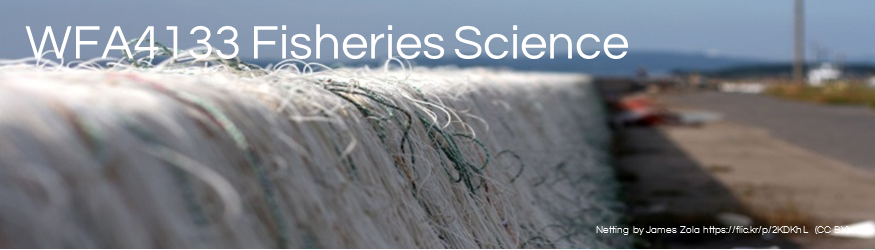
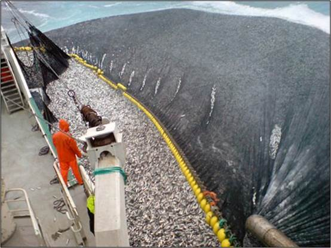
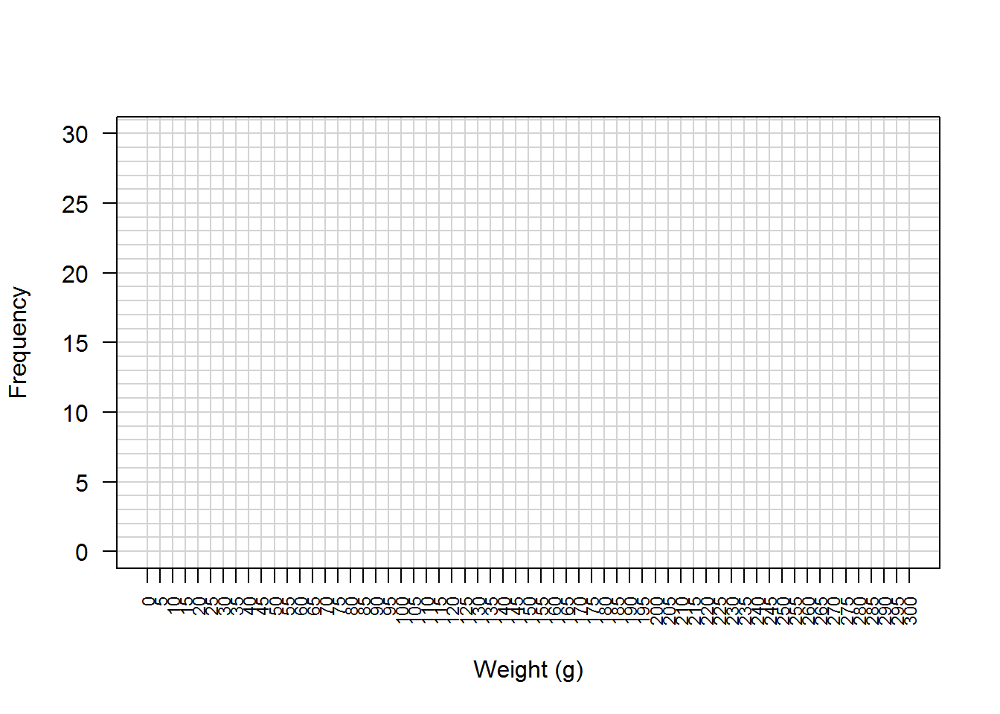
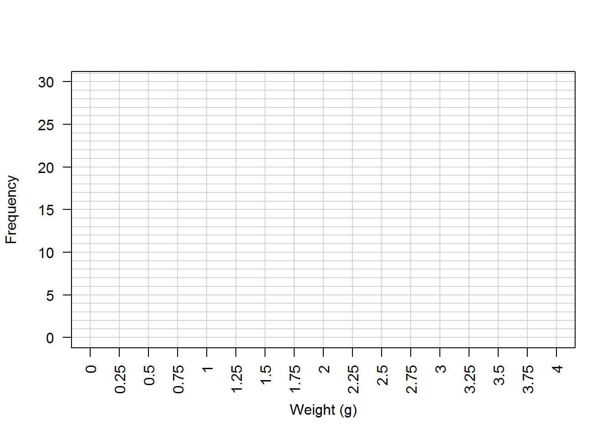

Sampling is a fundamental aspect of fisheries science and management. Samples are used to estimate quantities, which in turn are used to understand (i.e., science), manage, and regulate fisheries. In the simplest case fish length, weight, or both is measured and used to estimate a mean. However in fisheries, weight is most commonly measured and used to estimate biomass. This is because weight is easy to measure in bulk and therefore fishery landings are measured as biomass. The image below, albeit extreme, illustrates what catch may look like!

How do we measure relevant metrics of the catch when there are that many fish? Statistics! In statistics we sample a larger population to estimate useful bits of information. The objectives of this laboratory are to further your understanding of
This laboratory will consist of 3 exercises designed to simulate common data collection encountered while performing fisheries tasks and varying estimated statistics. This lab is worth 10 points.
Laboratory questions to be completed by 5pm of the next scheduled lab. Answers are to be reported online using the form located here: http://goo.gl/forms/j92IDo7EMF. This link is can also be found under the lab section on the class website for your convenience.
In this example you will estimate the total weight of a population. In this exercise there are 100 fishes in the tub. This is the population. Let’s get to it.
Weight of 5 fishes:___________
Estimated weight of the population:___________
| Metric | Value |
|---|---|
| Observations | |
| Mean | |
| Median | |
| Minimum | |
| Maximum | |
| Range | |
| Variance |
Ok, 5 fish really is not that many relative to the 100 fish in the tub. Let’s see what happens when we take 10 fish.
Weight of 10 fishes:___________
Estimated weight of the population:___________
| Metric | Value |
|---|---|
| Observations | |
| Mean | |
| Median | |
| Minimum | |
| Maximum | |
| Range | |
| Variance |
The previous approaches resulted in 20 or so individual biomass estimates. However there is no way to estimate the variance of the sample. This is because we sampled 5 or 10 fish in a grab sample and replaced the fish in the tub. To remedy the lack of variance, a common practice in fisheries is to take measurements on the first 30 fish or so in your catch. Let’s simulate this and how you can estimate the total weight of the catch by doing the following:
fish weight 1:__________
fish weight 2:__________
| Metric | Value |
|---|---|
| Observations | |
| Mean | |
| Median | |
| Minimum | |
| Maximum | |
| Range | |
| Variance |
Estimated biomass:__________
You may have noticed something in the histogram generated in exercise 3. Also we should have found that doing grab samples and the first 30 or so fish results in biased biomass estimates. One way to minimize bias of biomass estimates is to stratify the samples. In this case we can stratify by size, little and big fish. Let’s simulate this and how you can estimate the total weight of the catch and see if we can do better!
Large fish weight 1:__________
Small fish weight 2:__________
| Metric | Value (lg) | Value (sm) |
|---|---|---|
| Observations | ||
| Mean | ||
| Median | ||
| Minimum | ||
| Maximum | ||
| Range | ||
| Variance |
Weighted mean:__________
Estimated biomass:__________

Figure 1. Histogram of biomass estimates given 5 fish.
Figure 2. Histogram of biomass estimates given 10 fish.

Figure 3. Histogram of individual fish weights given a simple sample.